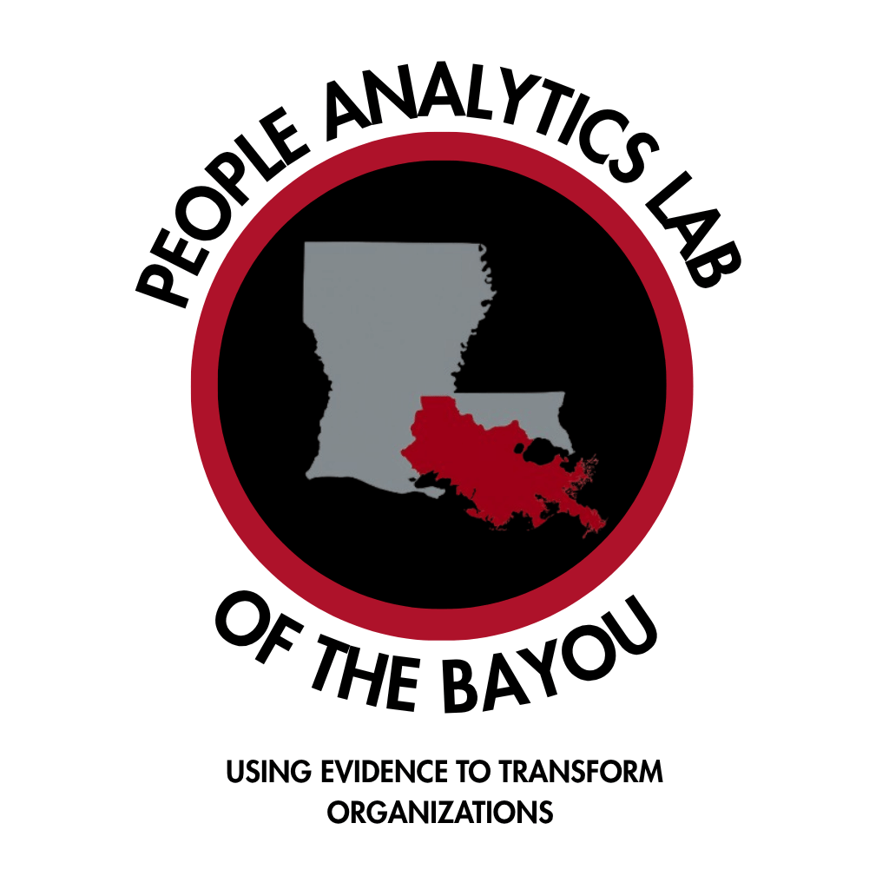

Pre-decision rating effectiveness · Linked by Candidate ID
Principal Investigator: Dr. Christopher M. Castille | Institution: Nicholls State University
This research examines how students and working professionals evaluate the effectiveness of HR management tactics in situational judgment scenarios. Your responses will be used for research and teaching in aggregate. No names are stored with research data—only a participant ID.
You will complete one short survey pack (1 scenario(s)) covering: . You may complete a brief optional demographics questionnaire (skip any item), rate tactics on a 1–5 scale or skip any item, and download a PDF report. Students may upload the PDF to Canvas as directed. There are up to 8 packs; the same name always produces the same ID so your packs can be linked.
Participation is voluntary. You may skip any demographic item, skip any rating, skip this pack, or withdraw at any time by closing the browser. Contact the investigator to request destruction of data already collected. You must be 18 years of age or older.
Risks are minimal (time; feedback may differ from expectations). Benefits may include practice with HR situational judgment, a PDF summary of your ratings, and contribution to research. Students may receive course credit as determined by the instructor. There is no monetary payment.
Your name is used only to generate a participant ID and is not stored with research data. Demographic answers (if provided) are stored with your participant ID only. Data are reported only in aggregate or de-identified form.
Dr. Christopher M. Castille, christopher.castille@nicholls.edu, (337) 256-0664. Questions about rights as a participant: Nicholls State University IRB.
Privacy note: Your name is used only to generate a Candidate ID. Your name is not stored. Use the same first and last name for every pack so your surveys link.
Helps us compare students and professionals. All items are skippable.
Complete this pack before the corresponding class decision.
Your Candidate ID
Write this down. Use the same name on every pack.
This sitting has 1 scenario(s):
Important: Responses are voluntary—you may skip any tactic. There are no “correct” answers for this rating task. Do not look up evidence on specific tactics until your instructor trains you. Rely on your own judgment.

Nicholls State University | Al Danos College of Business Administration
Pack finished